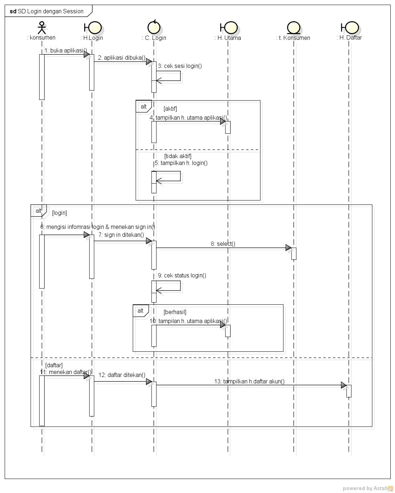

Nim : 1811500102
Nama : Puad Nabil Hakiki
Kelompok : TI6J
Hasil saduran :
1) Menjelaskan Pertemuan ke 6
2) Menjelaskan tentang pembuatan Sequence Diagram dimulai dari menganalisa:
3) Menjelaskan Fungsi atau menu untuk pembuatan Sequence Diagram :

download file latihan astah disini